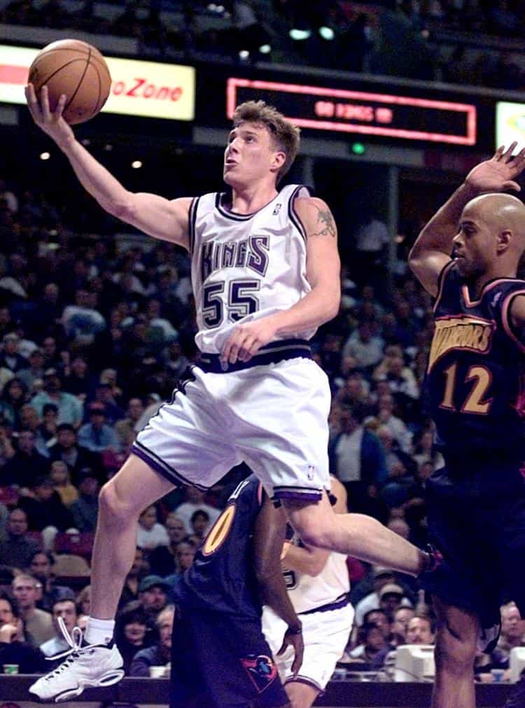

Alfonso Taft is a surfer stoner All-American Aryan alpha male quarterback. Raised in the Northeast, he speaks with a Southern twang for no apparent reason. Host of America's #1 Chadcast.


The American basketball court is akin to the barbershop, bowling alley, shooting range, or golf course: one of the last few bastions of masculinity here in the West. The American basketball court offers a place for men to get away from Clown World and access powerful, competitive, group exercise.
The local basketball court is accessible to virtually anyone. You don’t need a gym membership; you don’t even need a ball. All you need to do is show up in sneakers and shorts. Local outdoor courts usually have set days and times that are popular, while others are more sporadic. Indoor gyms typically have set times or organized leagues. If you show up and the court isn’t highly populated, simply ask a local when the popular times are.
Ideally, you need ten guys. Eight is fine for full-court and six works for half-court. You can even play two-on-two, or one-on-one if attendance is low. At the court I go to, there are often ten guys on the court playing and several guys waiting. Sometimes, there are many as fifteen men waiting to get on the court.
Let’s say there are twelve guys that show up. Teams are typically formed in two specific ways. Players line up and shoot from the free throw line and shoot one at a time. Teams are either decided via “first five,” where the first five guys who make a free throw are on a team, or “every other,” where the first guy to make a free throw is on Team A and the next guy to make a free throw is on Team B, and so on until both teams have five players.
When you miss your free throw, you go back to the end of the line in both “first five” and “every other” scenarios. If you don’t make a free throw, you sit out and are automatically on the next game.
Games are usually played to 11, 15, or 21. Normal buckets count as one point, while shots made beyond the three-point arc are counted as two. Typically, a team must win by two points.
Fouls are called via the honor system. The offense is allowed to call fouls but the defense is not, unless the foul is egregious. The defense can call out such infractions such as traveling or stepping out of bounds. No free throws are shot during pickup. When the offense is fouled, even in the act of shooting, it’s simply their ball.
If you don’t call fouls too often as an offensive player, you will gain respect. If you call fouls too often, the other players will lose respect for you, guaranteed.
The foul honor system is a major source of conflict. Fist fights, shoving matches, and arguments can break out as a result of disagreements over foul calls. The prospect of violence is part of the fun of pickup basketball. You should always be prepared to defend yourself.
You will be educated in tribalism during a game of basketball. When fights break out, sides are divided via tribal lines. It’s not wise to partake in a brawl if you are outnumbered ethnically. Certain ethnicities have a propensity towards the game of basketball because of their innate ability to run, shoot, and steal. Other ethnicities have a propensity for teamwork and strategy.
Some would advise not talking shit, I wouldn’t. If you can talk shit and back it up, it’s something I would highly advise. If you play well and talk shit, other players will respect you more. If you aren’t a good player, it’s best to play hard and keep quiet. If you are on fire, it’s best to remind others. Your teammates will pick up on this energy and feel more confident passing you the ball. There are few feelings that are better than dominating a game and talking shit to your opponents.
The team that wins stays on the court and keeps playing until they’re defeated. For the next game, the guys who were waiting due to failed free throw attempts are now automatically on. Any spots that need to be filled are earned via free throw.
Rules vary from city to city. Having played on courts all over the country, I can verify these are the general rules. A large percentage of American men are well-aware of these general rules and guidelines.
Players sprint, jump, shoot, shove, push, dribble, box out, steal, and foul. Playing basketball, I sweat more than any other workout that I do. At the end of a few games, I’m winded, tired, and drenched in sweat. I leave the court satisfied after competing at an intense level against my fellow men. Shooting a fadeaway jumper and making it is one of most satisfying feelings on earth. Lowering your shoulder and taking it to the hoop, rising above the rim, and finishing—ahh—is sometimes better than sex.

Unfortunately, you will get the occasional female that frequents the American basketball court. When a woman enters the game, the competitive nature of the sport totally declines. Players will stop playing hard, will leave the girl wide-open, or stop playing defense all together. Players on her team will pass her the ball when she is left wide-open, while the man who is supposed to be guarding her neglects his duties. The man who is assigned to guard her won’t play hard out of fear of injuring her.
When a female enters the game, your best options are to keep playing to get a good cardio workout, sit out a game, or simply leave, as I do often when this occurs.
In sharp contrast to females playing hoop, always be wary of fat guys. A seemingly universal rule of pickup basketball is that if there’s a fat guy on the court, he can shoot. Fat guys are lazy defenders but are often the most devastating shooters on the court, especially from long range.
I advise getting some good basketball sneakers. Players are often judged on their footwear and your teammates will pass you the ball more often if you look like a player.
We are living in an era where American man probably spends more time playing basketball video games than actually playing. My advice is to get out there and play, because you have nothing to lose but excess body fat.
Read More: 10 Ways That Modern Society Lowers Your Testosterone Levels